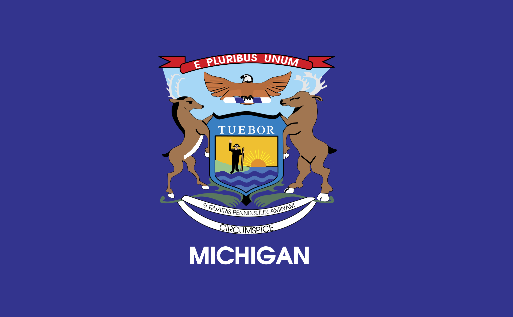

About Michigan
Michigan, called "The Great Lakes State," is the only state in the U.S. made up of two peninsulas: the Upper Peninsula and the Lower Peninsula. It's surrounded by four of the five Great Lakes, which have more than 80% of North America's fresh surface water. This makes Michigan great for water activities like boating, fishing, and swimming. The state has a big economy with car manufacturing, farming, and technology playing important roles. Michigan is also home to famous universities like the University of Michigan and Michigan State University, known for their research and academics. The state has a rich history with influences from Native Americans, French, and British settlers. Overall, Michigan is a beautiful and important part of the United States.
Sources: Wikipedia - Michigan
Michigan Facts
- Michigan is known as the "Great Lakes State."
- The state has over 11,000 inland lakes.
- Michigan is the leading auto-producing state in the U.S.
Major Industries in Michigan
- Automotive
- Agriculture
- Tourism
| City | Population | Year Incorporated | Region | Classification | Average Income | Comparison to State Average ($68,505) |
|---|---|---|---|---|---|---|
| Detroit | 636,787 | 1815 | Southeast | Urban | $37,761 | Below state average |
| Lansing | 112,644 | 1859 | Central | Urban | $50,747 | Below state average |
| Grand Rapids | 198,917 | 1850 | West | Urban | $61,634 | Near state Average |